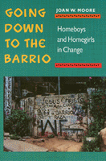

<body bgcolor="#FFFFFF" text="#000000" link="#0000FF" vlink="#CC0000" alink="#CC0000"><center><hr width="350" size="1" align="center" noshade>An examination of the changes and continuities among three generations of barrio gangs<hr width="350" size="1" align="center" noshade><p><a href="https://cdcshoppingcart.uchicago.edu/Cart/ChicagoBook.aspx?ISBN=9780877228547&&PRESS=temple" target="_top">Buy this book!</a> | <a href="https://cdcshoppingcart.uchicago.edu/Cart/Cart.aspx?PRESS=temple" target="_top">View Cart</a> | <a href="https://cdcshoppingcart.uchicago.edu/Cart/Cart.aspx?PRESS=temple" target="_top">Check Out</a></p><p></p></center><!--none//--><h1>Going Down to the Barrio</h1>
<H2>Homeboys and Homegirls in Change</H2>
<h3>Joan W. Moore</h3>
<P>cloth 0-87722-854-X $70.50, Nov 91, <FONT COLOR=#990033>Out of Stock Unavailable</FONT>
<br>paper 0-87722-855-8 $32.95, Nov 91, <FONT COLOR=#990033>Available</FONT>
<br>Electronic Book 1-43990-394-8 $32.95 <FONT COLOR=#990033>Out of Stock Unavailable</FONT>
<BR> 200 pp
</P><h3 align="center"><P><font color="#996633">Philadelphia Book Clinic Certificate of Award,
1992</font></P>
</H3>
<BLOCKQUOTE><I>"This book makes a number of important and new contributions to our knowledge of gangs and is extremely timely. Among its major contributions is its balance in attention to both male and female gangs, and a view gang behavior over three generations which affords insights into changes and continuities in gang activity that are just not available elsewhere."</I>
<br>&#151<b>William Kornblum</b>, Professor of Sociology, City University of New York Graduate Center<I></I></BLOCKQUOTE>
<p>In this illuminating look at two Chicano gangs in East Los Angeles, Joan W. Moore examines the changes and continuities among three generations of barrio gangs. As a sequel to the author's award-winning study, <I>Homeboys</I> (Temple, 1979), this book returns to the same neighborhoods to chart the development of gang behavior, especially in terms of violence and drug use, and to compare experiences of male and female gang members.
<p>In a remarkable research collaborative effort, Moore and gang members worked together to develop an understanding of both male and female gangs and an internal vision of gang members' lives. By using excerpts from individual interviews, the author depicts more about the gangs than simply their life together as a unit; she gives them a voice. Gang members discuss their personal reaction to violence, drug using and selling, family relations and intra-gang dating; they share intimacies that reveal varying levels of loyalty to and dependency on their affiliations, which often become a family substitute.
<p>After maintaining neighborhood ties for 17 years, Moore's research group has established a relationship with these communities that gives her a rare perspective. This is a fascinating and informative book for anyone interested in sociology, criminology, youth behavior and deviance, and ethnic studies.
<BR>&nbsp;<h2>Excerpt</h2><P>Excerpt available at <a href="http://www.temple.edu/tempress">www.temple.edu/tempress</a></p>
<BR>&nbsp;<h2>Contents</h2><P>
<p>Acknowledgments
<br>1. Introduction
<br>2. The Setting: East Los Angeles
<br>3. Two Barrio Gangs: Growth, Structure, and Theoretical Considerations
<br>4. Changes in the Gangs
<br>5. Gang Members and the World Around Them
<br>6. Gang Members' Families
<br>7. Growing Up
<br>8. Conclusion
<br>Appendix: Sampling and Interviewing
<br>Notes
<br>Bibliography
<br>Index
</P><BR>&nbsp;<H2>About the Author(s)</H2>
<P><b>Joan W. Moore</b> is Professor of Sociology at the University of Wisconsin, Milwaukee.</P>
<BR><H2>Subject Categories</H2>
<p><A HREF="/tempress/sociology.html" TARGET="_top">Sociology</a>
</p>
<p align="center"><a href="https://cdcshoppingcart.uchicago.edu/Cart/ChicagoBook.aspx?ISBN=9780877228547&&PRESS=temple" target="_top">Buy this book!</a> | <a href="https://cdcshoppingcart.uchicago.edu/Cart/Cart.aspx?PRESS=temple" target="_top">View Cart</a> | <a href="https://cdcshoppingcart.uchicago.edu/Cart/Cart.aspx?PRESS=temple" target="_top">Check Out</a></p><p><font face="Arial" size="1"><a href="copyright.html" onMouseOver="window.status='Web Copyright Policy';return true;" onMouseOut="window.status=''" title="Web Copyright Policy">&copy;</a> 2015 <a href="http://www.temple.edu" target="new" onMouseOver="window.status='Link to Temple University home page';return true;" onMouseOut="window.status=''" title="Link to Temple University home page">Temple University</a>. All Rights Reserved. http://www.temple.edu/tempress/titles/810_reg.html</font></p>